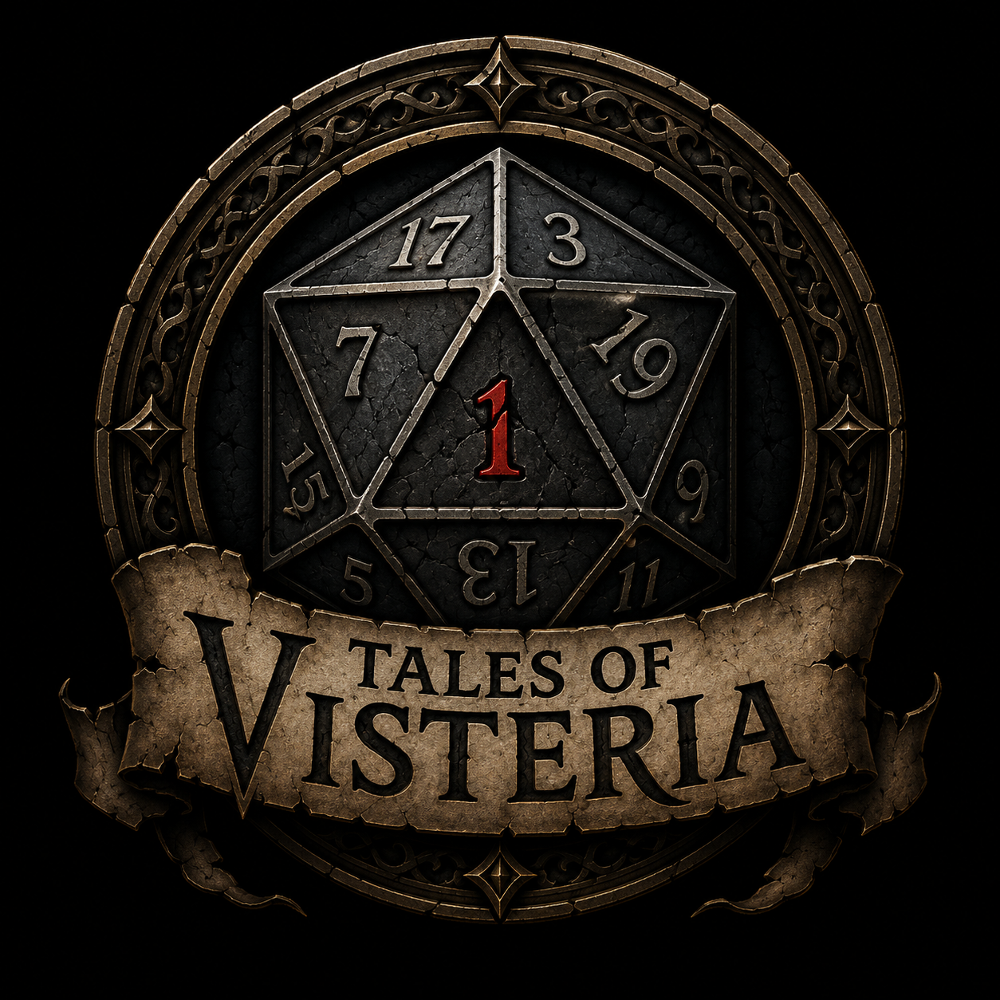

Password Generator
Generate secure passwords locally in your browser. No data is stored or sent anywhere.
Web ToolA collection of tools, experiments, and games.
Generate secure passwords locally in your browser. No data is stored or sent anywhere.
Web Tool
A browser RPG game project set in the world of Visteria. Current version: v0.8.1.
A kid friendly branching browser adventure built for Melody, Callum, Ledger, and their family. Current version: v1.0.0.
Join the community Discord for project updates, feedback, and whatever gets built next.